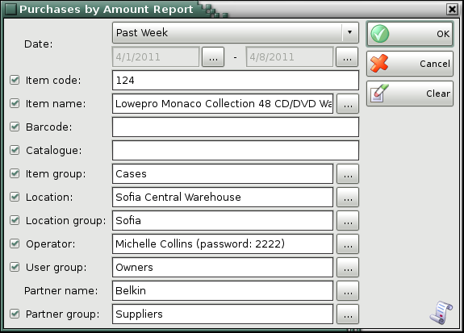
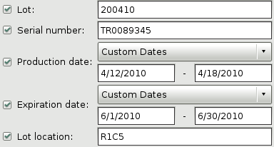
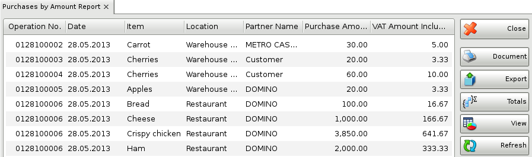

Purchases by amount report
In the first window of the report specify the filter criteria.
Only rows that are checked are visualized in the report.

You can choose a filter for each field by pressing the F4 key.
You can limit the report to a single criterion � for example, visualize purchases of a single item, or you can apply several criteria at a time � for example, visualize purchases from a particular customer for a particular period of time.
If you are working with lots, the application will add filters about the lot number, serial number, production date, expiration date and lot location.

To remove all specified filters, click the Clear button. The report will display all operations without any restrictions.
Click the OK button to generate the report using the specified criteria. Click Cancel to close the window.

The Purchases by amount report contains data about purchased items by total amounts. It displays the document number, the date, the partner and the amount.
Close button closes the report, Document button is used for report print preview, button Export to exports the report to CSV, Excel, Web Page or XML Data format and Totals button adds a line at the bottom of the window, that contains quantities and values amounts for each column.
�2006-2015 Microinvest, All rights reserved